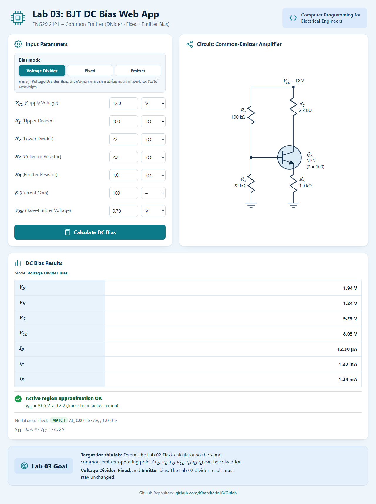
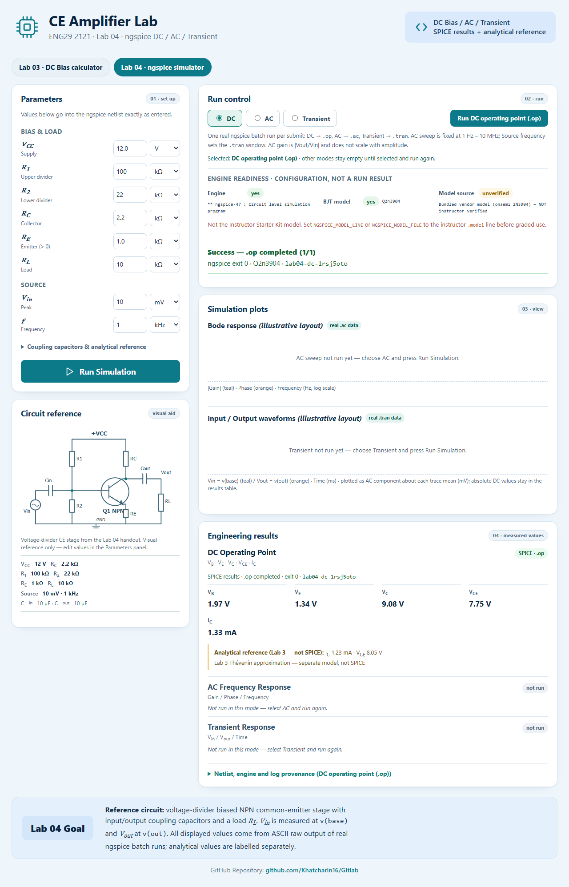
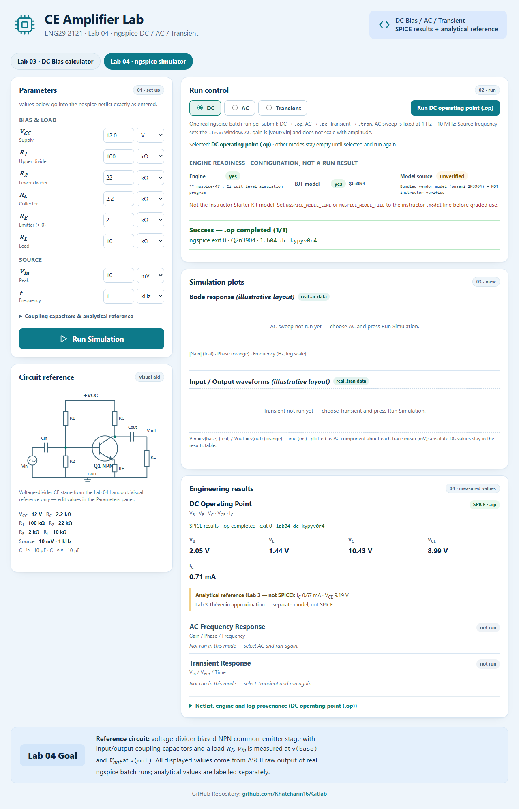

Every image below was captured by Playwright MCP (Microsoft Edge, headless) driving the real Flask app at 127.0.0.1:5002 with real ngspice-47 runs. Model: bundled onsemi 2N3904, labelled NOT instructor verified. 8 / 8 PASS

B1 · Lab 03 regression PASSDivider IC 1.23 mA / VCE 8.05 V unchanged; 23 Lab 03 tests pass.

B2 · DC .op PASSVB 1.97 V · VE 1.34 V · VC 9.08 V · VCE 7.75 V · IC 1.33 mA — lab04-dc-1rsj5oto

B3 · RE 1 kΩ → 2 kΩ PASSIC 1.33 → 0.71 mA, VCE 7.75 → 8.99 V — lab04-dc-kypyv0r4B4 · AC Bode PASS141 points, 1 Hz–10 MHz, gain 0.48–4.80 dB, −3 dB at 1.30964 Hz — lab04-ac-qnupv3e6